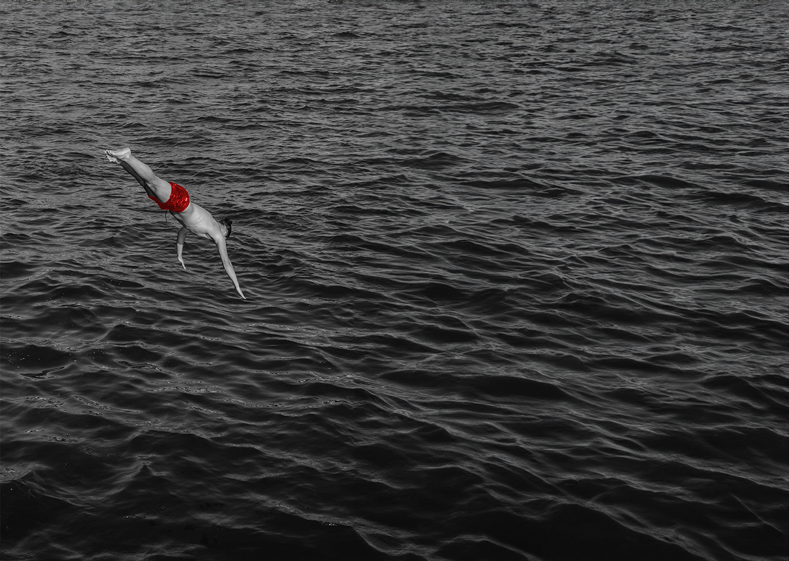
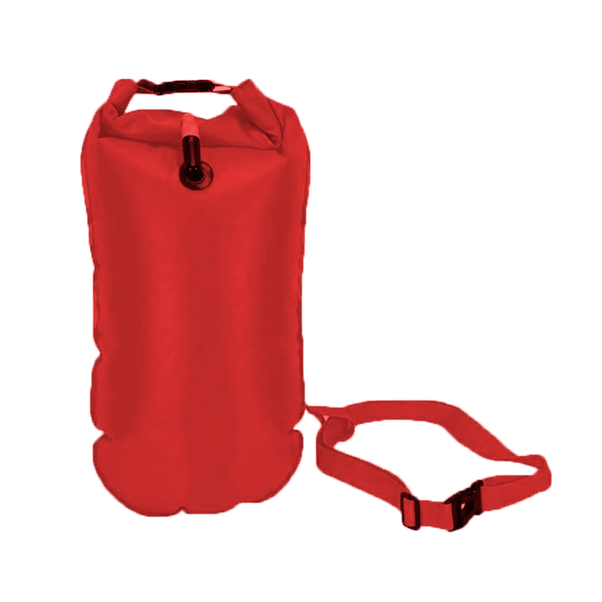

AARE YOU SAFE?
Schwimmen und Fischen in Bern
8°C
Wassertemperatur
150 m3/s
Wassermenge
12°C
Aussentemperatur
1000
Wassermenge in Anzahl Badewannen umgerechnet
Fisch vom Tag
Welle Fisch chöntisch hüt fische?

D'Bachforelle
D’Bachforelle isch en Süesswasserfisch us de Familie vo de Lachs. Sie lebt bevorzugt i klare, chüele und surstoffriche Bäch und Flüss mit steinigem Grund. Charakteristisch sind ihri goldbruni Färbig und die rote Punkt, wo oft vo helle Ring umgebe sind. Als standorttreuer Räuber ernährt sie sich vo Insekte, Larve und chlinere Fisch. Ökologisch gilt sie als Zeigerart: Gahts de Bachforelle guet, gahts em Gewässer meistens au guet.